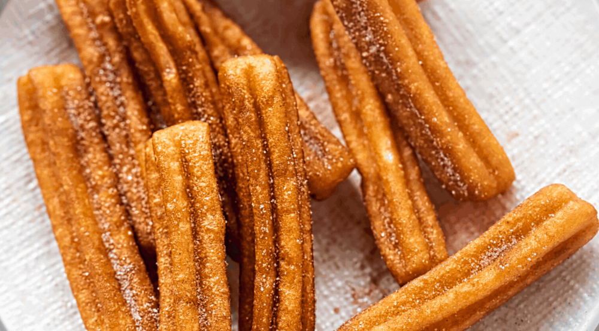

Churros

Methods
- In a large saucepan over medium heat, add water, butter, and sugar. Bring to a boil, then add vanilla.
- Turn off heat and add flour and salt. Stir with a wooden spoon until thickened, 30 seconds. Let mixture cool for 10 minutes.
- To cooled mixture, using a hand mixer, beat in eggs one at a time until combined. Transfer mixture to a piping bag fitted with a large open star tip.
- In a large pot over medium heat, add enough oil to come halfway up the sides and heat to 375°.
- Holding the piping bag a few inches above the oil, carefully pipe churros into 6" long ropes. Use kitchen scissors to cut off dough from piping bag.
- Fry until golden, 4 to 5 minutes, turning as necessary. Fry 3 to 4 churros at a time and let oil come back to 375° before each batch.
- Remove churros with a slotted spoon or tongs and immediately roll churros in cinnamon sugar, then place on a cooling rack.
- Serve.